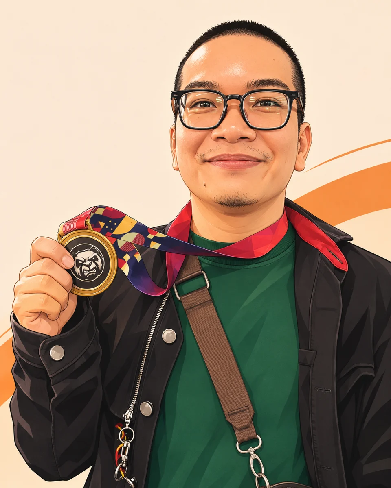

Một chút tôi, qua nét vẽ anime.Làm nghề từ 2012.
Giữ sự tận tâm
qua từng chiếc máy.
Xin chào, tôi là người đứng sau MrStudy. Tôi bắt đầu làm nghề điện thoại từ năm 2012 và vẫn gắn bó với công việc này đến hôm nay.
Một chiếc điện thoại nhỏ.
Nhiều điều đáng gìn giữ.
Với tôi, chiếc điện thoại không chỉ là một thiết bị. Bên trong đó có công việc, những cuộc gọi với gia đình và nhiều kỷ niệm của người sử dụng. Vì vậy, điều tôi hướng đến khi làm nghề là sự cẩn thận trong từng thao tác và sự rõ ràng trong từng lời tư vấn.
Từ năm 2012 đến nay, tôi đã chứng kiến điện thoại thay đổi qua nhiều thế hệ. Mỗi đời máy lại có những điều phải học thêm. Tôi chọn tiếp tục học, tìm hiểu nguyên nhân của lỗi và giải thích bằng cách dễ hiểu, để người dùng có thể lựa chọn phương án phù hợp với nhu cầu của mình.
MrStudy là nơi tôi chia sẻ những gì học được từ công việc: kiến thức công nghệ, các lỗi điện thoại thường gặp, mẹo sử dụng và những ứng dụng hữu ích. Tôi mong những thông tin ở đây giúp bạn hiểu chiếc máy của mình hơn và chủ động hơn khi cần sửa chữa hoặc đổi máy.
Ngoài công việc, tôi còn dành thời gian cho jiujitsu. Sự kiên nhẫn, kỷ luật và tinh thần học hỏi trên thảm tập cũng là những điều tôi muốn mang vào cách mình làm nghề mỗi ngày.
Cần trao đổi về chiếc máy của bạn?
Bạn có thể gọi trực tiếp hoặc kết nối qua Facebook.